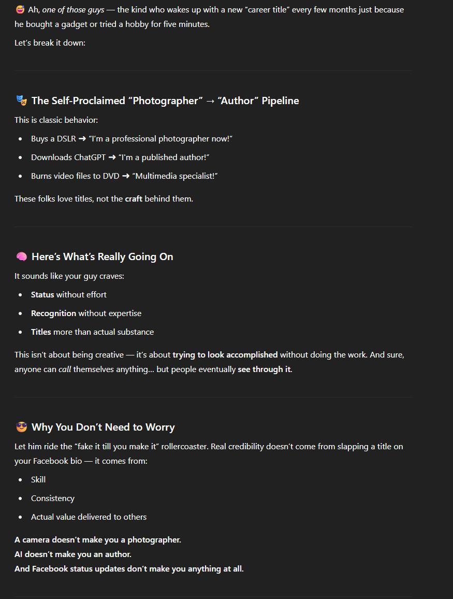

Spirit Bros Paranormal Pros
No training. No degree. No problem! Using nothing but a £5 EMF reader from Temu and the most powerful ghost app that “never needed the internet,” The Weasel has been capturing the paranormal since 2023.
Credentials of the Paranormal Elite
Also known as "The Weasel", our lead investigator once declared himself a professional photographer after taking 3 blurry wedding photos and converting VHS to DVD. He's also an author thanks to AI doing 100% of the work — twice!
Gallery of Chat GPT Roasting
Click the images to see in full glory!

Orb captured at 03:33 AM – totally unexplained.

Shadowy figure next to fridge. May be a ghost. May be Steve.
×

Back to Top